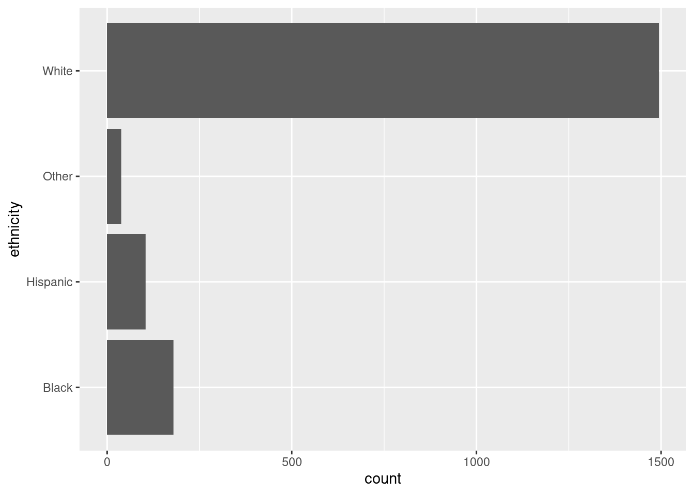
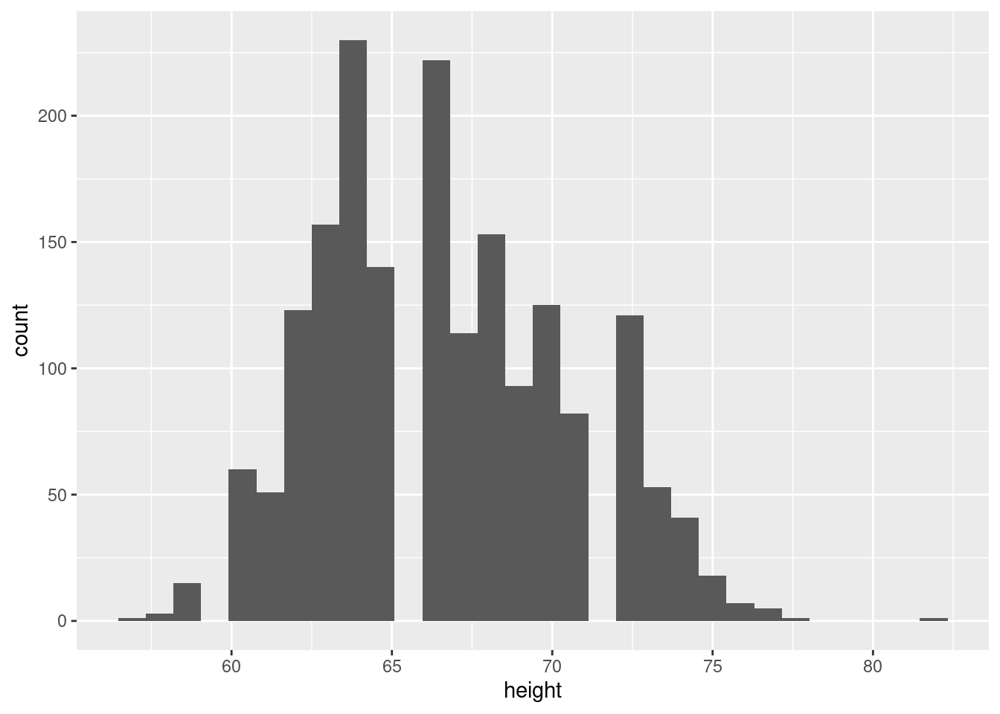
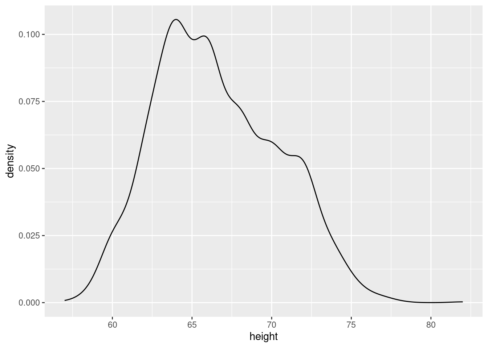
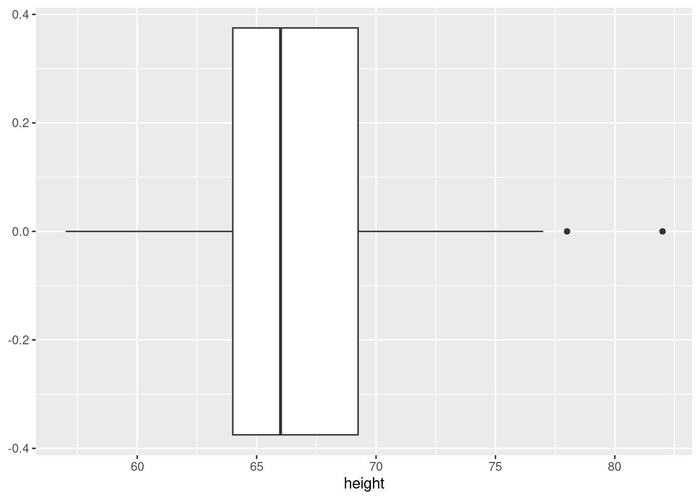
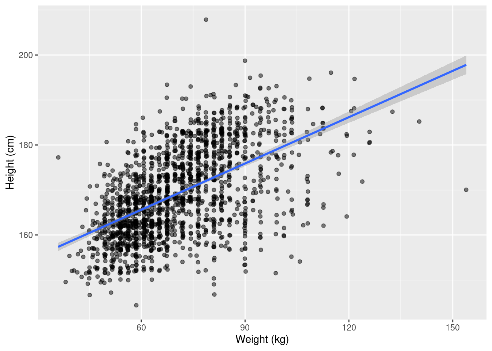

1 + 4[1] 53 - 2[1] 12 * 8[1] 162 / 8[1] 0.252^4[1] 16Shortcut to insert a code chunk: Ctrl-Alt-i Shortcut to run a single line of code: Ctrl-Enter Shortcut to run the whole chunk: Ctrl-Shift-Enter
1 + 4[1] 53 - 2[1] 12 * 8[1] 162 / 8[1] 0.252^4[1] 16Shortcut for the assignment operator: Alt - (minus)
y <- 34
y - 40[1] -6x <- c(1, 4)## Length, average, sum of a numeric vector
mean(x)[1] 2.5sum(x)[1] 5length(x)[1] 2## Documentation
?meanz <- "Hello, world!"2 < 5[1] TRUE2 > 5[1] FALSE"Text 2" == "Text 2"[1] TRUEz == "Text 2"[1] FALSElibrary(tidyverse)── Attaching core tidyverse packages ──────────────────────── tidyverse 2.0.0 ──
✔ dplyr 1.1.1 ✔ readr 2.1.4
✔ forcats 1.0.0 ✔ stringr 1.5.0
✔ ggplot2 3.4.1 ✔ tibble 3.2.1
✔ lubridate 1.9.2 ✔ tidyr 1.3.0
✔ purrr 1.0.1
── Conflicts ────────────────────────────────────────── tidyverse_conflicts() ──
✖ dplyr::filter() masks stats::filter()
✖ dplyr::lag() masks stats::lag()
ℹ Use the conflicted package (<http://conflicted.r-lib.org/>) to force all conflicts to become errorsdt <- tibble(
id = 1:5,
y = c(2, 2.5, 3, 8, 12)
)
dt# A tibble: 5 × 2
id y
<int> <dbl>
1 1 2
2 2 2.5
3 3 3
4 4 8
5 5 12 earnings <- read_csv("https://raw.githubusercontent.com/feb-uni-sofia/econometrics2021/main/data/earnings.csv")Rows: 1816 Columns: 15
── Column specification ────────────────────────────────────────────────────────
Delimiter: ","
chr (1): ethnicity
dbl (14): height, weight, male, earn, earnk, education, mother_education, fa...
ℹ Use `spec()` to retrieve the full column specification for this data.
ℹ Specify the column types or set `show_col_types = FALSE` to quiet this message.earnings <- mutate(
earnings,
height_cm = 2.54 * height,
weight_kg = 0.45 * weight
)
earnings1 <- select(earnings, height_cm, weight_kg)The same code can be rewritten in a more convenient way using pipes.
earnings1 <- earnings %>%
mutate(
height_cm = 2.54 * height,
weight_kg = 0.45 * weight
) %>%
select(height_cm, weight_kg)Note that the object holding the original data is unaffected by mutate and select.
\[ x = (x_1, x_2,\ldots, x_n)\\ \bar{x} = \frac{1}{n}\sum_{i = 1}^{n} x_i \]
\(n = 1816\).
mean(earnings1$height_cm)[1] 169.0848mean(earnings1$weight_kg, na.rm = TRUE)[1] 70.33734max(earnings1$height_cm) - min(earnings1$height_cm)[1] 63.5var(c(1, 3))[1] 2table(earnings$ethnicity)
Black Hispanic Other White
180 104 38 1494 earnings %>%
ggplot(aes(y = ethnicity)) +
geom_bar()
max(earnings$height_cm)[1] 208.28min(earnings$height_cm)[1] 144.78max(earnings$height_cm) - min(earnings$height_cm)[1] 63.5\[ x = (x_1, \ldots, x_n)\\ S^2_x = \frac{1}{n - 1} \sum_{i = 1}^{n}(x_i - \bar{x})^2: \quad \text{variance}\\ S_x = \sqrt{S^2_x} \quad \text{standard deviation} \]
x <- c(1, 3)
((1 - 2)^2 + (3 - 2)^2) / 1[1] 2var(x)[1] 2sd(x)[1] 1.414214var(earnings$height_cm)[1] 94.72796sqrt(var(earnings$height_cm))[1] 9.732829sd(earnings$height_cm)[1] 9.732829## Basic summaries for the whole tibble
earnings %>% skimr::skim()| Name | Piped data |
| Number of rows | 1816 |
| Number of columns | 17 |
| _______________________ | |
| Column type frequency: | |
| character | 1 |
| numeric | 16 |
| ________________________ | |
| Group variables | None |
Variable type: character
| skim_variable | n_missing | complete_rate | min | max | empty | n_unique | whitespace |
|---|---|---|---|---|---|---|---|
| ethnicity | 0 | 1 | 5 | 8 | 0 | 4 | 0 |
Variable type: numeric
| skim_variable | n_missing | complete_rate | mean | sd | p0 | p25 | p50 | p75 | p100 | hist |
|---|---|---|---|---|---|---|---|---|---|---|
| height | 0 | 1.00 | 66.57 | 3.83 | 57.00 | 64.00 | 66.00 | 69.25 | 82.00 | ▂▇▅▁▁ |
| weight | 27 | 0.99 | 156.31 | 34.62 | 80.00 | 130.00 | 150.00 | 180.00 | 342.00 | ▅▇▃▁▁ |
| male | 0 | 1.00 | 0.37 | 0.48 | 0.00 | 0.00 | 0.00 | 1.00 | 1.00 | ▇▁▁▁▅ |
| earn | 0 | 1.00 | 21147.30 | 22531.77 | 0.00 | 6000.00 | 16000.00 | 27000.00 | 400000.00 | ▇▁▁▁▁ |
| earnk | 0 | 1.00 | 21.15 | 22.53 | 0.00 | 6.00 | 16.00 | 27.00 | 400.00 | ▇▁▁▁▁ |
| education | 2 | 1.00 | 13.24 | 2.56 | 2.00 | 12.00 | 12.00 | 15.00 | 18.00 | ▁▁▁▇▃ |
| mother_education | 244 | 0.87 | 13.61 | 3.22 | 3.00 | 12.00 | 13.00 | 16.00 | 99.00 | ▇▁▁▁▁ |
| father_education | 295 | 0.84 | 13.65 | 3.25 | 3.00 | 12.00 | 13.00 | 16.00 | 99.00 | ▇▁▁▁▁ |
| walk | 0 | 1.00 | 5.30 | 2.60 | 1.00 | 3.00 | 6.00 | 8.00 | 8.00 | ▃▁▃▁▇ |
| exercise | 0 | 1.00 | 3.05 | 2.32 | 1.00 | 1.00 | 2.00 | 5.00 | 7.00 | ▇▁▁▁▃ |
| smokenow | 1 | 1.00 | 1.75 | 0.44 | 1.00 | 1.00 | 2.00 | 2.00 | 2.00 | ▃▁▁▁▇ |
| tense | 1 | 1.00 | 1.42 | 2.16 | 0.00 | 0.00 | 0.00 | 2.00 | 7.00 | ▇▁▁▁▁ |
| angry | 1 | 1.00 | 1.42 | 2.16 | 0.00 | 0.00 | 0.00 | 2.00 | 7.00 | ▇▁▁▁▁ |
| age | 0 | 1.00 | 42.93 | 17.16 | 18.00 | 29.00 | 39.00 | 56.00 | 91.00 | ▇▇▃▃▁ |
| height_cm | 0 | 1.00 | 169.08 | 9.73 | 144.78 | 162.56 | 167.64 | 175.89 | 208.28 | ▂▇▅▁▁ |
| weight_kg | 27 | 0.99 | 70.34 | 15.58 | 36.00 | 58.50 | 67.50 | 81.00 | 153.90 | ▅▇▃▁▁ |
table(earnings$ethnicity)
Black Hispanic Other White
180 104 38 1494 Histogram
earnings %>%
ggplot(aes(x = height)) +
geom_histogram()`stat_bin()` using `bins = 30`. Pick better value with `binwidth`.
A smooth density plot is an alternative way to visualize the distribution of a variable.
earnings %>%
ggplot(aes(x = height)) +
geom_density()
The boxplot shows the median and the 25-th and 75-th percentiles (the box). The whiskers in the plot stretch to the minimum or the maximum observed value, unless there are extreme observations that are shown as single dots.
earnings %>%
ggplot(aes(x = height)) +
geom_boxplot()
Group comparisons
earnings %>%
ggplot(aes(x = height, y = ethnicity)) +
geom_boxplot()
The scatterplot will be our primary tool in studying associations between variables. It represents each observation as a point in a coordinate system defined by the variables that we would like to study.
earnings1 %>%
ggplot(aes(x = weight_kg, y = height_cm)) +
geom_point(position = "jitter", alpha = 0.5) +
geom_smooth(method = "lm") +
labs(
x = "Weight (kg)",
y = "Height (cm)"
)`geom_smooth()` using formula = 'y ~ x'Warning: Removed 27 rows containing non-finite values (`stat_smooth()`).Warning: Removed 27 rows containing missing values (`geom_point()`).
summary(lm(height_cm ~ weight_kg, data = earnings1))
Call:
lm(formula = height_cm ~ weight_kg, data = earnings1)
Residuals:
Min 1Q Median 3Q Max
-27.639 -5.611 -0.084 5.645 36.248
Coefficients:
Estimate Std. Error t value Pr(>|t|)
(Intercept) 145.00916 0.89138 162.68 <2e-16 ***
weight_kg 0.34314 0.01237 27.73 <2e-16 ***
---
Signif. codes: 0 '***' 0.001 '**' 0.01 '*' 0.05 '.' 0.1 ' ' 1
Residual standard error: 8.15 on 1787 degrees of freedom
(27 observations deleted due to missingness)
Multiple R-squared: 0.3009, Adjusted R-squared: 0.3005
F-statistic: 769.1 on 1 and 1787 DF, p-value: < 2.2e-16